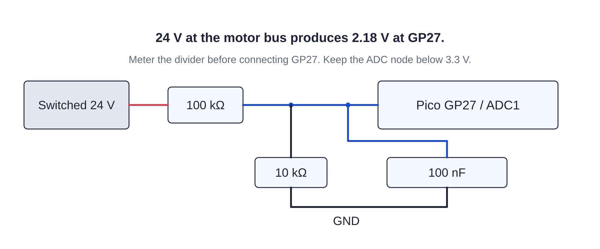

Controller / sensing126 / 179
Measure switched voltage
The divider tells the controller whether the motor bus is present. It also exposes loss of power while USB stays on.
Add100 kΩ · 10 kΩ · 100 nF · GP27 sense wire
Tools / setupDriver power disconnected · voltmeter

- Connect 100 kΩ from switched VM to the sense node and 10 kΩ from that node to GND.
- Connect 100 nF between the sense node and GND. Leave GP27 disconnected.
- Power the adapter with the stop released; meter the node against GND.
- Unplug the adapter after the reading, then connect the node to GP27.
Ready when
The sense node is approximately VM ÷ 11 and remains below 3.3 V. Pressing the stop removes power; the sense reading falls with VM. An incorrect ratio or a node at VM can damage the Pico. Disconnect the adapter; meter resistor values and correct the divider before GP27 is connected.